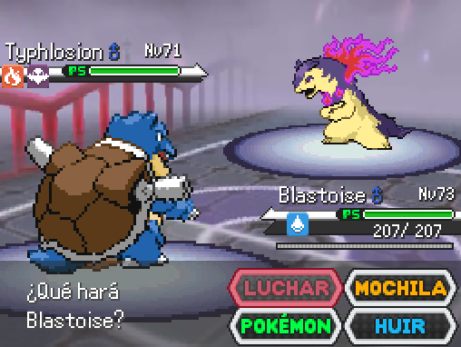
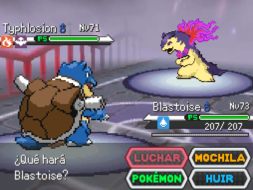

Juego creado por

Pokémon Anil revive la región de Kanto con una experiencia definitiva e inmejorable.
Con su narrativa original y cautivadora, explorarás un mundo repleto de secretos, misterios y poderosas criaturas que pondrán a prueba tus habilidades como entrenador. El juego combina estrategia, aventura y un sistema competitivo que recompensa la creatividad y la determinación, ofreciendo múltiples modos de juego como Nuzlocke o Random para quienes buscan emociones intensas. Cada batalla será un reto inolvidable, y cada victoria te acercará más a descubrir qué hace de Pokémon Anil una aventura inolvidable. ¡Atrévete a entrar en un viaje épico lleno de sorpresas!
 
